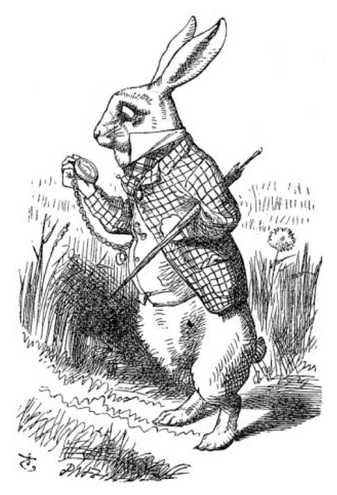

Down the Rabbit-Hole
Alice was beginning to get very tired of sitting by her sister on the bank and of having nothing to do; once or twice she had peeped into the book her sister was reading, but it had no pictures or conversations in it, ‘and what is the use of a book,’ thought Alice, ‘without pictures or conversation?’
So she was considering in her own mind (as well as she could, for the hot day made her feel very sleepy and stupid), whether the pleasure of making a daisy-chain would be worth the trouble of getting up and picking the daisies, when suddenly a White Rabbit with pink eyes ran close by her.
There was nothing so very remarkable in that; nor did Alice think it so very much out of the way to hear the Rabbit say to itself, ‘Oh dear! Oh dear! I shall be late!’ (when she thought it over afterwards, it occurred to her that she ought to have wondered at this, but at the time it all seemed quite natural); but when the Rabbit actu- ally took a watch out of its waistcoat-pocket and looked at it and then hurried on, Alice started to her feet, for it flashed across her mind that she had never before seen a rabbit with either a waistcoat-pocket or a watch to take out of it, and burning with cu- riosity, she ran across the field after it, and fortunately was just in time to see it pop down a large rabbit-hole under the hedge.
In another moment down went Alice after it, never once considering how in the world she was to get out again.
Gallery


Trailer for Disney's 2010 Alice in Wonderland
Transcript +
Alice: Curiouser and curiouser.
Rabbit: I told you she was the right alice
Mouse: I am not convinced
Rabbit: How is that for gratitude
Flower: She doesn't even look anything like herself.
Mouse: That's because she's the wrong alice
TweedleDee: If she was she might be
Tweedledum: If she isn't she ain't
Tweedledee: But if she was so she whould be
Tweedledum: But she isn't no how
Alice: How can I bee the wrong Alice when this is my dream?
Alice: And who are you if I might ask?
Tweedledee: I'm tweedledee he's tweedledum
Tweddledum: I'm sure I was tweedledum he's tweedledee
Dodo: We should consult Absolum
Flower: Exactly, Absloum'll know who she is
Tweedledee: I'll escort you
Tweedledum: Hey its not being your turn
Tweedledee: Its only fair
Tweedledum: Hey leave off
Tweedledee: Let Go
Alice: Are they always this way?
Join the Mailing List!
Thank You For Your Interest
However, this site is currently just for a demonstration. Filling int he form to the left and clicking submit will not actually do anything.
If you would like to get ahold of me, you can do so by visiting my website at www.tarnoff.info. You can also help support projects like this by purchasing a set of stickers from my website.